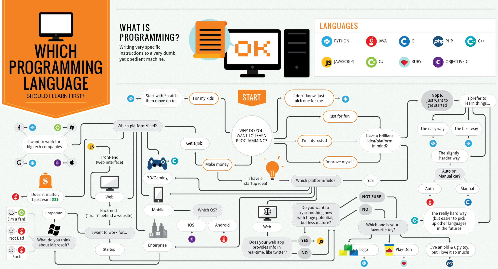
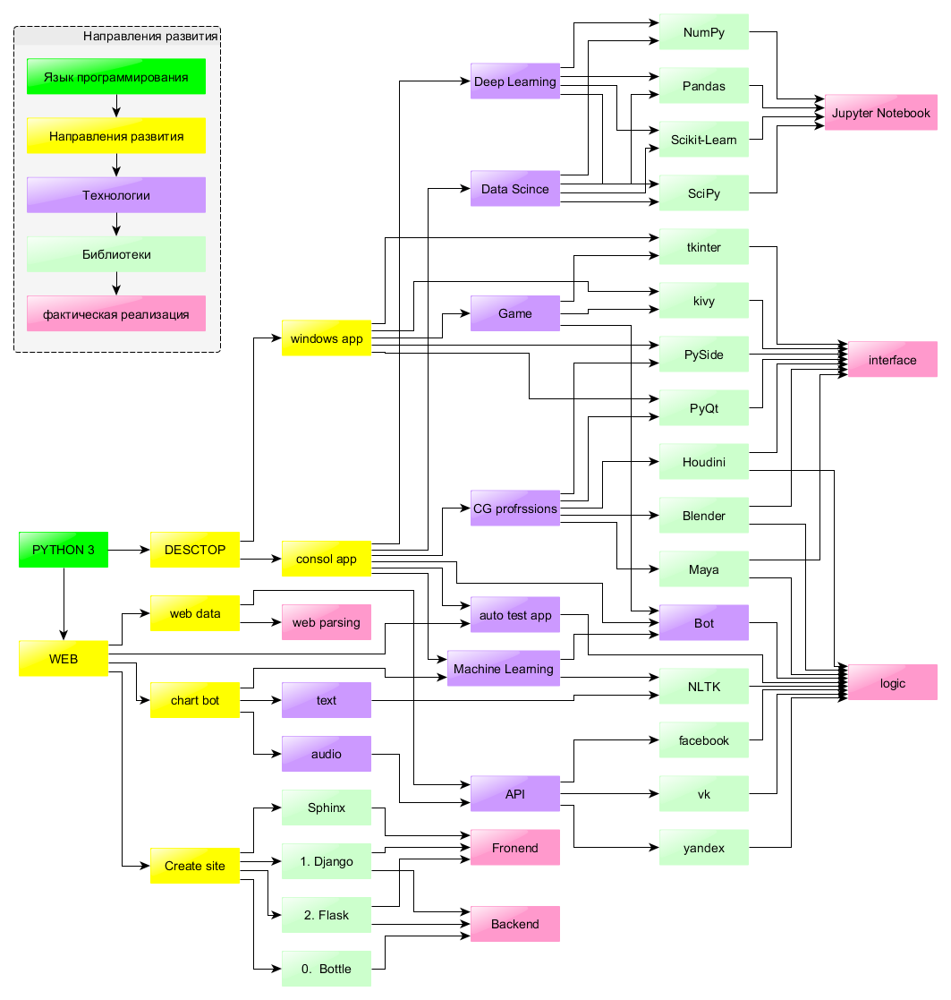

1. Почему Python?¶
1.1. Какой язык программирования выбрать?¶
Мораль в направлениях развития не исключая иронии:
- python - 7 раз. ;)
- java - 5 раз. :/
- C, C++, C#, js по 2 раза. ;(
1.2. Возможности Python¶
Внимание вопрос: Сколько времени нужно для самостоятельного изучения?
1.3. PEP 20. Дзен Python¶
- Красивое лучше уродливого.
- Явное лучше неявного.
- Простое лучше сложного.
- Сложное лучше запутанного.
- Развернутое лучше вложенного.
- Разреженное лучше плотного.
- Читаемость имеет значение.
- Особые случаи не настолько особые, чтобы нарушать правила.
- При этом практичность важнее безупречности.
- Ошибки не должны замалчиваться.
- Если не замалчиваются явно.
- Встретив двусмысленность, отбрось искушение угадать.
- Должен существовать один - и, желательно, только один - очевидный способ сделать что-то.
- Хотя этот способ поначалу может быть и не очевиден, если вы не голландец.
- Сейчас лучше, чем никогда.
- Хотя никогда часто лучше, чем
*прямо*сейчас. - Если реализацию сложно объяснить - идея точно плоха.
- Если реализацию легко объяснить - возможно, идея хороша.
- Пространства имен - отличная штука! Будем использовать их чаще!
Внимательный читатель воскликнет - «Так их же 19!». В этом заключается философский подтекст - Никакие правила не возводить в абсолют. Здесь каждый может определить для себя свой принцип и будет прав.
1.4. Первые программы¶
1.4.1. Первый «Hello world!:)»¶
Создадим текстовый файл с именем hello_world.py В нем сохраним следующий код:
print('Hello world!:)')
Это классический пример первой консольной программы для многих языком программирования. Запустить файл на исполнение можно несколькими способами, но мы запустим его с помощью встроенной в библиотеку python среды разработки: IDLE.
1.4.2. Диалоговые окна¶
from tkinter import messagebox
messagebox.showinfo('Информационное окно', 'В некоторых странах справочные пункты для туристов на картах обозначаются буквой "i"')
messagebox.showwarning('Внимание!', 'Синтаксис языка питон один из самых кратких.') # shows warning message
messagebox.showerror('Сообщение об ошибке', 'Решив изучать питон, Вы точно не ошибетесь в своем выборе. :)') # shows error message
Итак, что же такое «Диалоговые окна»?
1.4.3. Игра «Школа шпионо⻶
from tkinter import messagebox
res = messagebox.askquestion('Внимание вопросы', 'На все вопросы отвечать только да или нет. \nПонятно?')
res = messagebox.askyesno('Вопрос 1', 'Как Вас зовут?')
res = messagebox.askyesnocancel('Вопрос 2', 'Сколько вам лет?')
res = messagebox.askokcancel('Вопрос 3', 'Ваш любимый цвет?')
res = messagebox.askretrycancel('Вопрос 4', 'Сколько кнопок вы видите перед собой?')
Данный пример написанной программы показывает, что на самом-то деле компьютер не так уж и умен. :) ПК вообще на редкость глупое устройство, способное лишь делать то, что ему написано. А иллюзия ума компьютера зависит только от программиста.